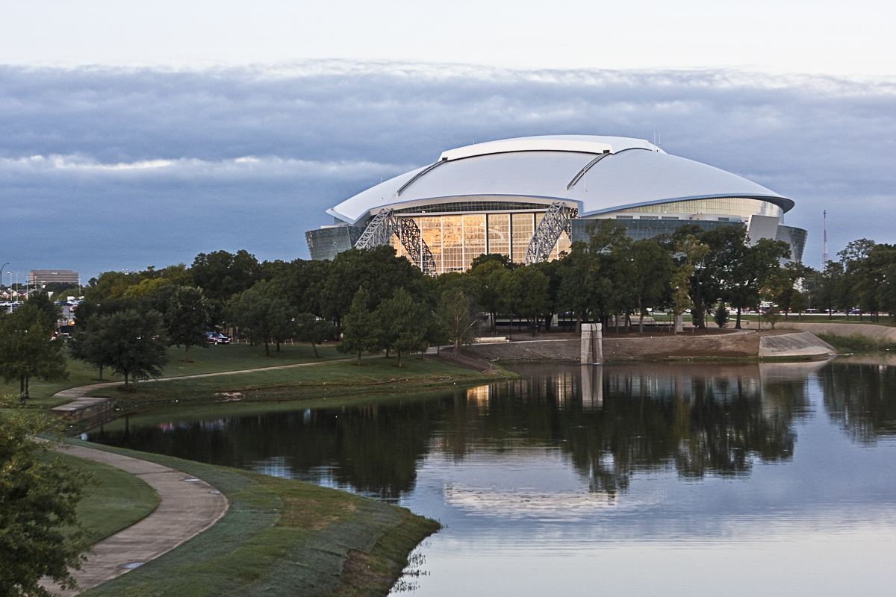
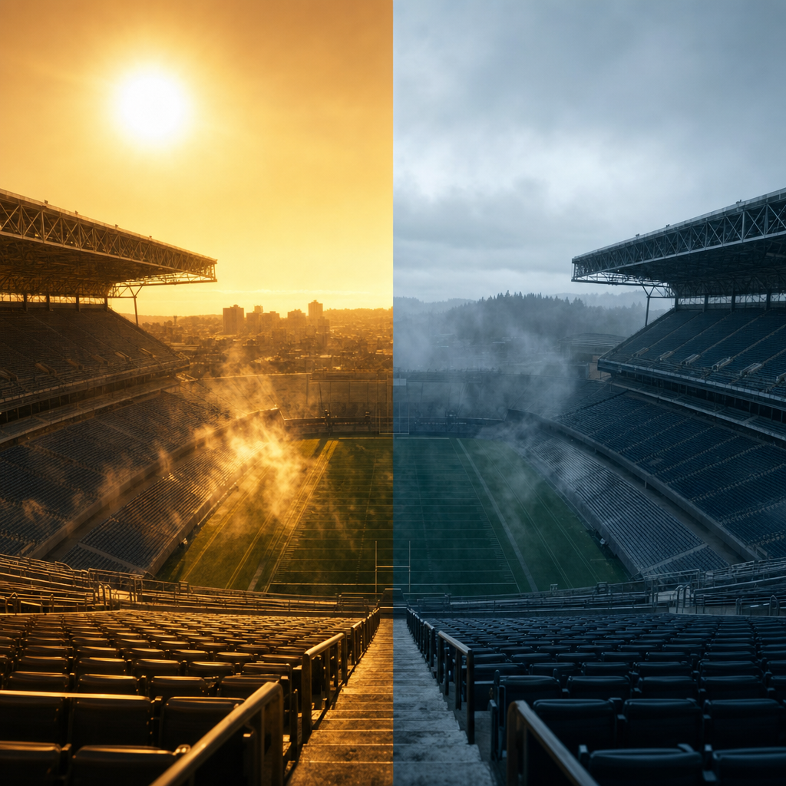

2The first World Cup spread across a continent hands teams not just opponents, but weather — from a 38°C furnace to a 21°C evening.
3One Tournament, Sixteen Climates
4The 2026 World Cup will not be played under one sky. 5Rank its 16 stadiums by how hot the air actually feels in the tournament window and the spread is staggering: 38.6°C in Houston, 38.3°C in Dallas, down to a mild 21.5°C in Vancouver. 6That is a 17.1°C gulf between the hottest and coolest venue — inside the same tournament, sometimes on the same day.
7At one extreme a team sweats through a Houston afternoon that feels like 38.6°C; at the other it plays a Vancouver evening cooler than a London spring. 8Miami is wet on 88% of days; Santa Clara saw rain on 0% of the days we sampled. 9Mexico City kicks the whole thing off at 2,200 metres of altitude. 10The “where” of this World Cup is also the “how hard.”
11This is a story about location and weather — about a draw that hands teams not just opponents, but climates. 12Explore the map below to see it.
13The centerpiece · click any venue
214The 2026 World Cup Weather Map
15feels-like high: 21°C → 38°C◯ marker size = number of matches17Climate: Open-Meteo (CC BY 4.0), 2021–2024 average for 11 Jun–19 Jul · Photos: Wikimedia Commons
3
18How hot it really feels — all 16 venues
19Average apparent (“feels-like”) high, 11 Jun–19 Jul, 2021–2024. 20Spread top to bottom: 17.1°C.
822Sonification: higher pitch = hotter venue. 23Each tone highlights its bar.
925Optional atmosphere — the page works fully in silence.
26The First Continental World Cup
27For the first time, a World Cup spans three countries and 16 cities: 11 in the United States, 3 in Mexico, 2 in Canada. 28It is also the first 48-team, 104-match edition, stretched over 39 days from 11 June to 19 July. 29To tame the travel, FIFA split the hosts into Western, Central and Eastern regional clusters — but the clusters still cover four time zones and thousands of kilometres.
30The load is lopsided. 31The United States hosts 78 of the 104 matches across its 11 venues; Canada and Mexico get 13 each. 32Three-quarters of the tournament unfolds in the country with the widest internal climate range of all.
33Even within that, some cities carry far more football than others. 34Dallas leads with 9 matches, followed by Los Angeles, New York/New Jersey and Atlanta at 8 apiece. 35Mexico's three venues sit at the bottom of the table, 4 to 5 matches each.
4
36Matches per venue, colored by host nation
37United States 78 · Mexico 13 · Canada 13
5

AT&T Stadium, Arlington39— 9 matches, the busiest venue and a dry-hot, climate-controlled bowl. 40Photo: bobbyh_80, Wikimedia Commons, CC BY 2.0.
41The Heat Is the Headline
42Heat is the headline. 43FIFPRO, the global players' union, has flagged six venues — Atlanta, Dallas, Houston, Kansas City, Miami and Monterrey — as posing an “extremely high risk” of heat-stress injury. 44The climate record agrees: those are clustered at the top of the feels-like ranking, between 33.9°C and 38.6°C.
45And that is where a lot of football is scheduled. 46Weight each venue's matches by its feels-like high and Dallas tops the heat-exposure index (9 matches at 38.3°C), trailed by Atlanta, Houston and Miami. 47In raw counts, 35 of 104 matches (33.7%) fall at venues whose typical feels-like high is 34°C or more, and 41 matches (39.4%) land at the six venues FIFPRO singled out. 48Roughly four in ten World Cup matches are booked into the danger band.
74938.6°C50feels-like high in Houston — the hottest venue
5139.4%52of matches at FIFPRO “extremely high risk” venues
5317.1°C54gap between the hottest and coolest venue
6
55Where the most football meets the most heat
56Heat-exposure index = matches × feels-like high. 57Bars colored by feels-like temperature.
58Why does Houston (33.5°C air) feel hotter than Dallas (34.9°C air)? Humidity. 59The feels-like penalty is biggest where the air is wettest — Miami adds +5.9°C, Houston +5.1°C — while dry Santa Clara actually feels half a degree cooler than its thermometer reads. 60Across the venues, humidity and the feels-like penalty move together (r = 0.49). 61It is not just heat; it is heat the body cannot sweat away.
62This is not hypothetical. 63At the 2025 Club World Cup, the same-summer dress rehearsal, temperatures hit 104°F in Charlotte and players described the conditions as brutal. 64FIFPRO wants matches postponed at a 28°C WBGT; FIFA does not act until 32°C — a gap a panel of experts called “impossible to justify.” FIFA's answer so far is mandatory three-minute hydration breaks each half.
65Brutal, Dry-Hot, Warm, Mild
66Plot every venue by feels-like heat against humidity and the 16 sort into four tribes. 67Three are brutal — hot and humid at once: Houston, Miami and Atlanta. 68Two are dry-hot — fierce thermometers but drier air, where roofs and evaporation help: Dallas and Monterrey. 69Six are merely warm, and five are genuinely mild — Mexico City, Toronto, Vancouver, Seattle and Santa Clara, all at or below a 27°C feels-like.
72Fairness demands a caveat. 73The hottest venues are not all equally exposed. Dallas (AT&T), Houston (NRG) and Atlanta (Mercedes-Benz) have full climate control, and FIFA says roofed stadiums will host daytime matches. 75But BC Place's roof will be open for every 2026 game because FIFA wants natural light on the grass, and the final venue, MetLife, has no roof at all. 76The climate numbers are the hazard; the roof is the mitigation — and the two do not always line up.
77The other lever is the clock. 78FIFPRO points to Major League Soccer, where Miami simply does not kick off at midday and hasn't for years. 79Broadcast windows pull the other way, toward early-afternoon European prime time. 80That collision — TV money against the thermometer — is where the schedule meets the weather.
11

81The gulf, made visible: a brutal sun-baked bowl beside a cool, misty one. 82Illustrative AI image (OpenRouter, gpt-5.4-image-2) — not a real venue.
83Rain, Altitude and the Cool Corners
84Heat is not the only weather that bites. 85Miami is wet on 88% of days in the window, with Mexico's altitude cities close behind (Guadalajara 73%, Mexico City 72%) thanks to the North American summer monsoon. 86At the other pole, California is parched: Santa Clara recorded rain on 0% of sampled days, Inglewood just 1%. 87Even famously drizzly Seattle is dry in midsummer at 13%. 88Wet venues trade heat stress for lightning delays.
12
89How often it rains in the tournament window
90Share of days with rain, 2021–2024 average. 91Miami 88% → Santa Clara 0%.
92Then there is the thin air. 93Mexico City's Estadio Azteca sits at 2,200 metres — more than a kilometre above any other venue and high enough to sap aerobic capacity and bend the flight of the ball. 94It is also why Mexico City stays mild despite its low latitude: altitude, not breeze, is its air conditioner. 95The tournament opens there on 11 June and ends at sea-level MetLife on 19 July, the geographic bookends of a continental sprawl.
13
96Venue elevation — Mexico City towers over the field
97Metres above sea level. Every other venue sits below 330 m.
99The 16 venues
14
100Stadium photos via Wikimedia Commons under their respective CC licenses (see References). 101Kansas City / Arrowhead Stadium has no public-domain photo and is shown as a climate placeholder, never a fabricated image.
102The Schedule Meets the Sky
103The 39-day calendar opens softly with two matches on 11 June, swells to six on the busiest group-stage day, then narrows to a single match in the late knockout rounds. 104On those dense early days, the most stadiums run at once — multiplying the number of pitches baking under a peak afternoon sun on the same date.
15
105Matches per day across the 39-day window
106Opener 11 Jun (2) → group-stage peak 24 Jun (6) → final 19 Jul (1).
107So the location-and-weather story is really one question with two halves: where the matches are, and how hard the sky pushes back. 108Four in ten of them sit in the heat band that worried the doctors. 109The fixes exist — roofs, evening kickoffs, postponement thresholds — but every one of them is a choice still being argued over.
110One honest caveat runs under all of it: these are typical-climate numbers, averaged over 2021–2024, not a 2026 forecast. 111They are the loaded dice, not the roll. 112But when a third of the matches sit on the hot face of the die, you do not need a forecast to see the gamble.
16113Climate, not a forecast114Every weather figure here is 115typical historical climate116for the 11 June–19 July window, averaged over 2021–2024 from the Open-Meteo archive (CC BY 4.0) — not a prediction117for any specific 2026 match date. 118“Feels-like” (apparent temperature) approximates a heat index from air temperature and humidity; it is not the WBGT metric FIFA and FIFPRO use for thresholds. 119Raw climate also ignores stadium roofs and air conditioning: Dallas, Houston and Atlanta have full climate control, BC Place's roof will be open in 2026, and MetLife has none. 120Some fixtures list playoff placeholder opponents; this story depends only on venue and date.